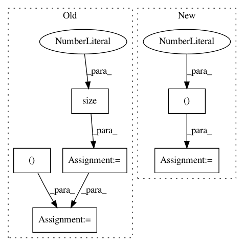

18f7a20f9098da9bd848e31b501b6b1c571accc1,test/nn/conv/test_appnp.py,,test_appnp,#,5
Before Change
def test_appnp():
in_channels, out_channels = (16, 32)
edge_index = torch.tensor([[0, 0, 0, 1, 2, 3], [1, 2, 3, 0, 0, 0]])
edge_weight = torch.rand(edge_index.size(1))
num_nodes = edge_index.max().item() + 1
x = torch.randn((num_nodes, in_channels))
lin = torch.nn.Linear(in_channels, out_channels)
conv = APPNP(K=10, alpha=0.1)
assert conv.__repr__() == "APPNP(K=10, alpha=0.1)"
out1 = conv(lin(x), edge_index)
assert out1.size() == (num_nodes, out_channels)
out2 = conv(lin(x), edge_index, edge_weight)
assert out2.size() == (num_nodes, out_channels)
jit = torch.jit.script(conv.jittable())
assert jit(lin(x), edge_index).tolist() == out1.tolist()
After Change
x = torch.randn(4, 16)
edge_index = torch.tensor([[0, 0, 0, 1, 2, 3], [1, 2, 3, 0, 0, 0]])
row, col = edge_index
adj = SparseTensor(row=row, col=col, sparse_sizes=(4, 4))
conv = APPNP(K=10, alpha=0.1)
assert conv.__repr__() == "APPNP(K=10, alpha=0.1)"
out = conv(x, edge_index)
In pattern: SUPERPATTERN
Frequency: 3
Non-data size: 6
Instances
Project Name: rusty1s/pytorch_geometric
Commit Name: 18f7a20f9098da9bd848e31b501b6b1c571accc1
Time: 2020-06-27
Author: matthias.fey@tu-dortmund.de
File Name: test/nn/conv/test_appnp.py
Class Name:
Method Name: test_appnp
Project Name: rusty1s/pytorch_geometric
Commit Name: 5a9c6aa03ea55ad85601c0c33ff762d6a2e2c7fa
Time: 2020-05-23
Author: matthias.fey@tu-dortmund.de
File Name: torch_geometric/nn/models/node2vec.py
Class Name: Node2Vec
Method Name: loss
Project Name: junyanz/BicycleGAN
Commit Name: 219b3f98001448eff5f2cbb5467940b6a2bfb4fe
Time: 2018-09-03
Author: junyanzhu89@gmail.com
File Name: data/aligned_dataset.py
Class Name: AlignedDataset
Method Name: __getitem__